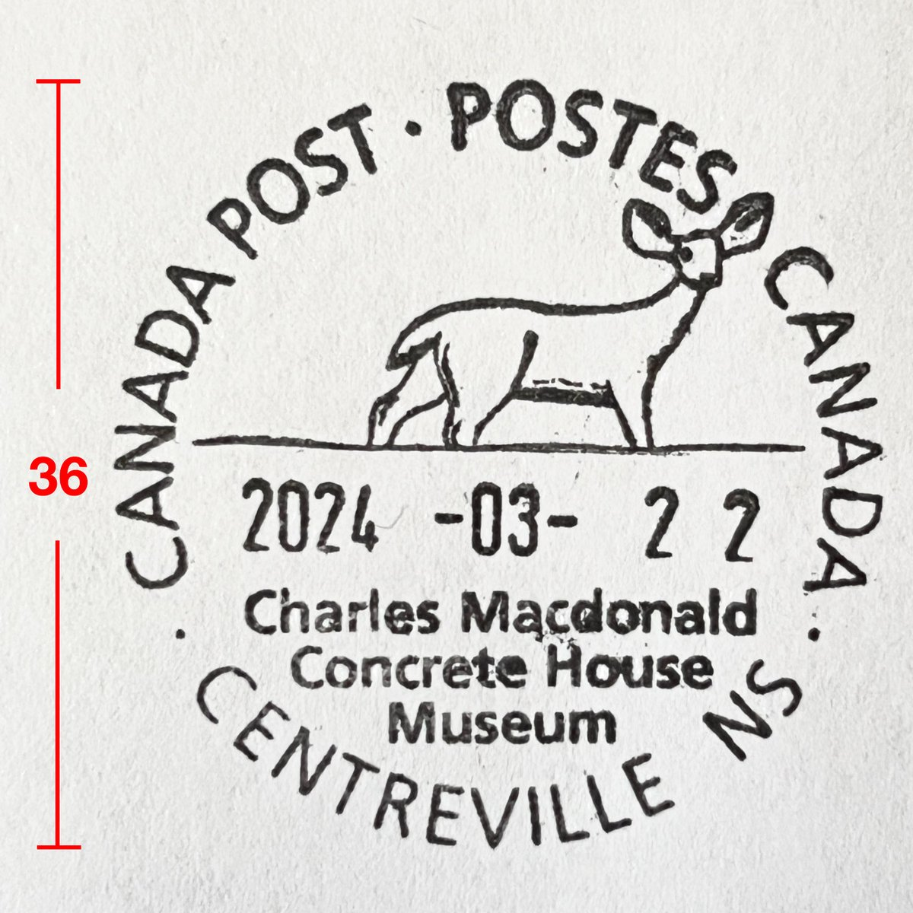

Centreville PO pictorial cancel
Charles Macdonald Concrete House Museum
- Status
- Active
- Run dates
- ? to present
- Design
- "Charles Macdonald Concrete House Museum"; deer
- Ink colour
- Black
- Designer
- Unknown
- Post office
- Centreville PO
877 Sherman Belcher Rd
Centreville, NS
B0P 1J0 - Subjects
- animal, mammal, deer, folkart, art, culture, museum
Collect it by mail. Send your stamped covers, with a stamped return envelope, to the post office address above. How to collect pictorial cancels by mail · en français
 Port Williams POShip
Port Williams POShip Port Williams POPlanter
Port Williams POPlanter Berwick POApple
Berwick POApple Aylesford POCRANBERRY Capital of Nova Scotia
Aylesford POCRANBERRY Capital of Nova Scotia